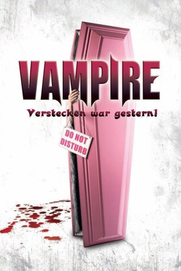

#9399 Vampire - Verstecken war gestern!
Alternativ: Vampires
 
 IMDB-Wertung: 6.2 / 10
IMDB-Wertung: 6.2 / 10  Metascore: 0
Metascore: 0 
Schluss mit dem Verstecken! Die Vampire sind unter uns. Und zumindest in Belgien werden sie auch in die Gesellschaft integriert. Um den Normalsterblichen einen Blick aufs untote Leben zu geben, wird eine Kameracrew losgeschickt, um im Reality-TV-Stil zu zeigen, wie es sich als Vampir so lebt. Die Crew trifft auf den Patriarch Georges, seine Frau Bertha und die beiden Kinder Samson und Grace. Wie jede Familie hat auch diese ihre Probleme: Grace möchte sterblich sein und begeht ein ums andere Mal Suizid, bleibt jedoch erfolglos, und Samson lässt nichts anbrennen. Er verführt die Frau des Vampirfürsten des Distrikts. Das hat Folgen, denn aus dem beschaulichen und schönen Leben in Belgien geht es ab in die Verbannung nach Kanada, wo das Blutsaugerdasein alles andere als angenehm ist ...
Jahr: 2010
Dauer: 89 Minuten
FSK: 16
Land: Belgien Studio: EurozoomTonspuren:
Untertitel:
Auflösung: 1080p (1920x1040) Größe: 5990 MB
Genre: Horror, Komödie, Fantasy
Regisseur: Vincent Lannoo
Drehbuch: Frédérique Broos, Vincent Lannoo
Soundtrack:
Darsteller:
- Paul Ahmarani als Adélard
- Alexandra Kamp als Eva
- Olivier Masset-Depasse als
- Carlo Ferrante als George
- Vera Van Dooren als Bertha
- Pierre Lognay als Samson
- Fleur Lise Heuet als Grâce
- Bénédicte Bantuelle als La viande
- Baptiste Sornin als Bienvenu
- Selma Alaoui als Elisabeth
- Arnaud Maillard als Steve
- Julien Doré als Jean-Paul
- Thomas Coumans als Le petit ami de Grâce
- Vincent Lannoo als L'interviewer
- Florette Fichefet als La professeure de morsure
- Paul Absil als
- Ian Lauzon als Marc-Antoine Dahou 'le psy'
- Catherine Cédilot als
- Eliott Ventadour als
- Chloé Périlleux als
Datei: X:\2010(N-Z)\Vampire - Verstecken war gestern! (2010, FSK16, 1920x1040).mkv seit 30.08.2018
Festplatte: HD 2010(G-Z)-2011(A-F)
 Es gibt insgesamt 115 Filme in der Gruppe '2010(N-Z)'
Es gibt insgesamt 115 Filme in der Gruppe '2010(N-Z)'